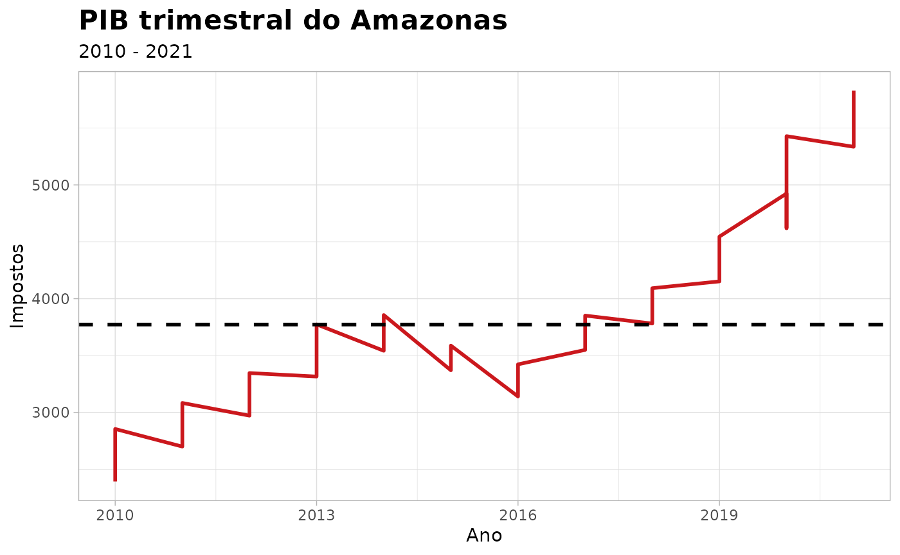

gdp_amazonas
gdp_amazonas.RmdProduto Interno Bruto - PIB do Amazonas
Descrição
Essa base possui dados sobre o Produto Interno Bruto (PIB) do Estado do Amazonas no decorrer dos anos (de 2010 até 2021). Inclui valores em R$ 1,000,000.
Formato
‘gdp_amazonas’ Um data frame com 48 linhas e 21 colunas
agriculture
Refere-se à produção econômica das atividades agrícolas, incluindo cultivo, colheita e suporte logístico pós-colheita.
livestock
Representa a contribuição econômica da pecuária, abrangendo a produção de carne, laticínios e serviços de suporte relacionados.
forest_fishing_prod
Produção proveniente da silvicultura (produtos madeireiros e não madeireiros), atividades pesqueiras e aquicultura (criação de peixes).
basic_infrastructure
Abrange serviços relacionados à geração de eletricidade e gás, abastecimento de água, tratamento de esgoto e gestão de resíduos.
vehicle_retail_repair
Inclui todas as atividades comerciais relacionadas à venda de bens e serviços, bem como serviços de reparo de veículos.
transport_storage_post
Abrange serviços relacionados ao transporte de pessoas e mercadorias, instalações de armazenamento e serviços postais.
accomodation_food
Refere-se às atividades econômicas em setores relacionados ao turismo, como hotéis e restaurantes.
financial_activities
Inclui bancos, instituições financeiras, companhias de seguros e diversos serviços financeiros.
professional_activities
Abrange uma ampla gama de serviços profissionais especializados, incluindo consultoria e suporte administrativo.
public_admin_defense_health_edu
Representa os gastos do setor público com administração governamental, defesa nacional, educação pública, serviços de saúde e programas de seguridade social.
private_edu_health
Refere-se a instituições educacionais e provedores de serviços de saúde que operam no setor privado.
art_culture_sport
Abrange atividades relacionadas ao entretenimento, eventos culturais, instalações esportivas e outros setores orientados a serviços.
Fonte
Scientific Journal of Applied Social and Clinical Science - TIME SERIES ANALYSIS FOR THE QUARTERLY GROSS DOMESTIC PRODUCT OF AMAZONAS.
Exemplos
require(dplyr)
require(ggplot2)
require(amazonasdatahub)
# Selecionando taxes e year
gdp_amazonas %>%
select(year, taxes) %>%
ggplot(., aes(x = year, y = taxes)) +
geom_line(linewidth = 1L, colour = "#cb181d") +
geom_hline(
yintercept = mean(gdp_amazonas$taxes),
linetype = "dashed",
size = 1
) +
theme_light() +
theme(
plot.title = element_text(face = "bold", size = 16)
) +
labs(
x = "Ano",
y = "Impostos",
title = "PIB trimestral do Amazonas",
subtitle = "2010 - 2021"
)